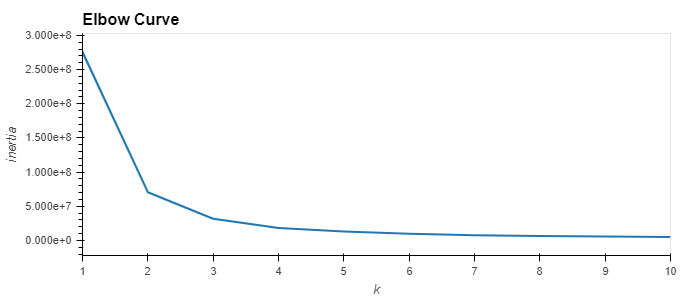

Findings
Model Findings
The UT Play Caller's goal is to predict what the opposing team would call in a given game time situation, then recommend the type of defense to call for the University of Texas. The data set presented dozens of features to choose from and the scaling and encoding presented even more options for user input. To make model inputs manageable for the user we ultimately chose these as the top features:
Feature Choices
- Selected features included:
- Half
- Time Remaining
- Down
- Distance to go
Random Forest Classifier
We initially selected a supervised learning model to begin the machine learning algorithms.
And the Random Forest Classifier being our first choice also turned out to be
the most reliable.
A concern of any machine learning model is overfitting. Borrowing from
Jason Brownlee,
we used that visualization style to identify how deep the forest can be run before the machine learning
model becomes too specific to the given data set.
Overfit plot. A max depth of anymore than 7 will result in overfitting.
Multiple Linear Regression
By using the LinearRegression method from sklearn, and fitting the data to the model, it is furthered revealed that the most impactful features are ‘quarter’, ‘down’, and ‘distance,’ aligning with what we see with the correlation map detailed above.

K-Means
K-Means is an unsupervised learning model that attempts to identify clustering issues.
In order find the optimum number of clusters for the K-Means model, we plotted
the clusters on the x-axis, then display the amount of data set variation on the y-axis,
This variation is also referred to as inertia. This analysis indicates that three clusters are
sufficient to optimize this machine learning model.

FYI, in the graph below, Rush is 1; pass is 0.
2-D scatter plot showing pass and rush play calls.
Given the plot above, it will be very difficult for this unsupervised learning model to make accurate predictions.
Look at the interactive graph page to see one of the many data visualizations we explored to see how features correlate to the predicted play.
Selected model
Ultimately, we stuck with our initial choice of machine learning models, the Random Forest Classifier.
Limitations of the model selected
Though our testing and data analysis RF emerged as the optimal machine learning model for our Defensive Call Player.
There are a few limitations that still exist. First, while there are options available for feature analysis when preparing the data,
once the model is making its decisions, it’s tough to tell what actions it’s taking.
The best way to counteract that is to have good data in. Additionally, RF models aren’t as prone to overfitting as other choices,
meaning this model could likely be extended outside of our limited scope.
Strengths of model chosen
Some features of the data showed high variance; given how a random forest (RF) machine learning model
with many decision trees can transform this to a low variance model, we chose RF for the predictor.
While we’re currently looking at a relatively smaller dataset,
we have the ability to expand it without worrying about the model’s accuracy changing.
Additionally, RF models aren’t as prone to overfitting as other choices,
meaning this model could likely be extended outside of our limited scope.
Recommendations for future development
Below are some recommendations for further development.
- Target data variables to account for differing opponents. The current assumption in the model is that opponents follow Sun Tzu's philosophy and adjust formations and play calls based on opponent strength and weaknesses.
- Increase predictability by removing some outliers (e.g. consecutive kneel-down plays) and assess model impact.
- Incorporate a larger data set; while unseen to the user, this team has access to more than a decade of play-by-play CFB data; the current model is limited by the host site size limits.
- Make the model iteratively grow; collect prediction results from user utilization to update the latest model.
- Use a data set with formation recognition.